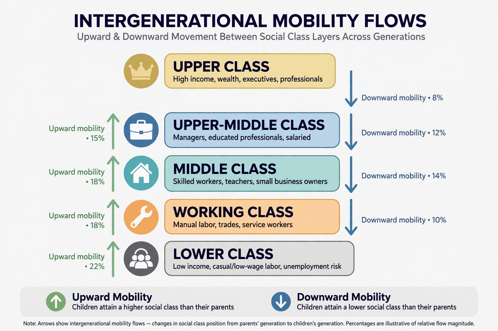

Social mobility

Social mobility is the movement of individuals, families, or groups between positions in a system of social stratification. Movement may be upward or downward, and sociologists distinguish intergenerational mobility (between parents and their children) from intragenerational mobility (within a single lifetime, as in a career), and absolute mobility (changes in living standards across the whole society) from relative mobility (the chances of people from different origins reaching different destinations).
Measurement
Mobility is measured using occupational class schemes, income, wealth, or education. Economists often estimate the intergenerational elasticity of earnings — how strongly parents' income predicts children's income. A landmark finding, sometimes called the "Great Gatsby curve", is that countries with higher income inequality tend to have lower relative mobility: children are more likely to remain near their parents' position on the ladder.
Pioneering work by Pitirim Sorokin, and later by Peter Blau and Otis Dudley Duncan in The American Occupational Structure (1967), established mobility tables as a standard tool. In Britain, the Nuffield studies associated with John Goldthorpe measured class mobility across the twentieth century; in the United States, Raj Chetty and colleagues, using large tax-record datasets, mapped sharply varying mobility by neighbourhood and documented declining absolute mobility — the share of children out-earning their parents fell from around 90 per cent for the 1940 birth cohort to about half for cohorts born in the 1980s.
Determinants
Education is the classic engine of mobility, though researchers debate whether it equalises opportunity or mainly certifies advantages children already have. Other determinants include family resources and networks, neighbourhood effects, health, discrimination by race, caste, and gender, and macroeconomic structure: the shift from manufacturing to professional services generated large absolute mobility in post-war decades (structural mobility) independent of how open competition was.
Mobility and meritocracy
The ideal of a mobile society is bound up with meritocracy — a term coined as a warning by Michael Young in 1958. Critics argue that even a perfectly "fair" competition for places can legitimate deep inequality of outcomes and leave those who fail convinced they deserve to, while defenders of mobility policies argue that equalising starting chances is both just and economically productive. Sociologists distinguish equality of opportunity from equality of outcome; mobility statistics inform the first debate but do not settle it.